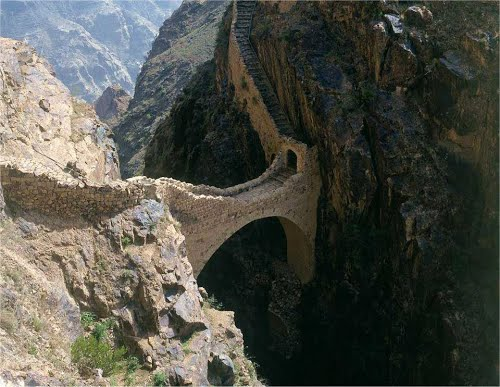
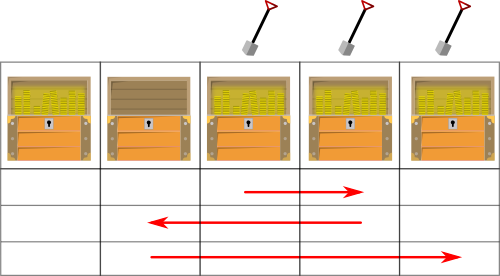

Para efeitos da nota atribuida à resolução de exercícios ao longo do semestre - Submeter até 23:59 de 3 de Dezembro
(o problema continuará depois disponível para submissão, mas sem contar para a nota)
[para perceber o contexto do problema deve ler o guião da aula #08]
Neste problema deverá submeter uma classe ED199 contendo um programa completo para resolver o problema (ou seja, com o método main).

Depois de muitos anos como concorrente de concursos de programação, muitas edições de qualificações, finais e outras provas das ONI, o Daniel decidiu finalmente reformar-se. Como próximo desafio, o Daniel escolheu fazer algo que seja igualmente emocionante. Decidiu por isso tornar-se caçador de tesouros!O seu próximo alvo está em Kilmia, uma aldeia localizada numa pequena ilha próxima da Península Arábica. Aqui se encontra a grande linha de Algor, uma linha com N arcas enterradas lado a lado. Algumas destas arcas contêm tesouros de enorme valor, que naturalmente o Daniel quer recolher.
Para recolher o máximo de tesouros, inicialmente o Daniel coloca-se em cima da B-ésima arca. Depois, ele segue um conjunto de I instruções escritas num velho mapa da região, de forma a percorrer as várias arcas. Cada instrução é da forma "anda X passos para a direita" ou "anda X passos para a esquerda". Um passo para a direita corresponde a avançar para a próxima arca no sentido este, um passo para a esquerda corresponde a avançar para a próxima arca no sentido oeste. Adicionalmente, sempre que o Daniel passa por uma arca (mesmo que esteja a meio de cumprir uma instrução), ele desenterra-a e recolhe o tesouro no seu interior, caso haja. Nota que o Daniel desenterra sempre a arca na posição onde começa, B.
Por exemplo, vamos considerar que há N = 5 arcas, sendo que todas as arcas tirando a segunda têm tesouro, e que o Daniel inicialmente se encontra na posição B = 3. A seguinte imagem representa esta situação:

No mapa do Daniel são dadas as seguintes I = 3 instruções:
Anda 1 passo para a direita Anda 2 passos para a esquerda Anda 3 passos para a direita
As setas na imagem representam estes movimentos. O Daniel passa por várias arcas e no fim pode recolher exatamente 3 tesouros (marcados na imagem com pás).
O Daniel terminou a sua aventura, mas ele precisa de saber quantos tesouros conseguiu recolher... mas são tantos! Ajuda-o a contar quantos tesouros recolheu, tendo em conta a sua posição inicial e as instruções que ele seguiu.
Dado um conjunto de N arcas da linha de Algor, a posição inicial do Daniel B e um conjunto de instruções sobre o movimento do Daniel, calcula quantos tesouros o Daniel recolhe.
Na primeira linha vêm três inteiros, N que representa o número de arcas, B que representa a posição inicial do Daniel e I que representa o número de instruções.
Segue-se uma linha com N caracteres que podem ser 'T' ou 'V' ('T'esouro, 'V'azia), sendo que o i-ésimo carácter representa o tipo da i-ésima arca, 'T' para uma arca com tesouro e 'V' para uma arca sem tesouro.
Seguem-se I linhas, cada uma com o seguinte formato: D P, onde D é um carácter que pode ser 'D' ou 'E' ('D'ireita, 'E'squerda), representado o sentido do movimento, e P é um inteiro que representa o número de passos a dar.
Nota: é garantido que as instruções nunca obrigam o Daniel a sair fora da linha de arcas, ou seja, a sua posição será sempre entre 1 e N.
O output contém um inteiro, o número de tesouros recolhidos pelo Daniel.
São garantidos os seguintes limites em todos os casos de teste que irão ser colocados ao programa:
| 1 ≤ N ≤ 100 000 | Número de arcas | |
| 1 ≤ B ≤ N | Posição inicial | 1 ≤ I ≤ 100 000 | Número de instruções |
Os casos de teste deste problema estão organizados em 4 grupos com restrições adicionais diferentes:
| Grupo | Número de Pontos | Restrições adicionais |
|---|---|---|
| 1 | 25 | 1 ≤ N ≤ 100, 1 ≤ I ≤ 100 |
| 2 | 20 | 1 ≤ I ≤ 3 000 |
| 3 | 20 | 1 ≤ N ≤ 3 000 |
| 4 | 35 | - |
5 3 3 TVTTT D 1 E 2 D 3
3
Este exemplo corresponde ao mencionado no enunciado.
10 5 9 TTTTVTTTTT D 1 E 2 D 1 D 1 D 1 E 3 E 1 D 4 D 1
5(adaptação para a UC de Estruturas de Dados - CC1007 - DCC/FCUP)